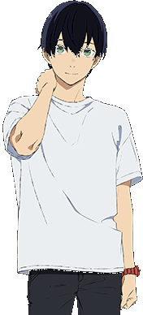
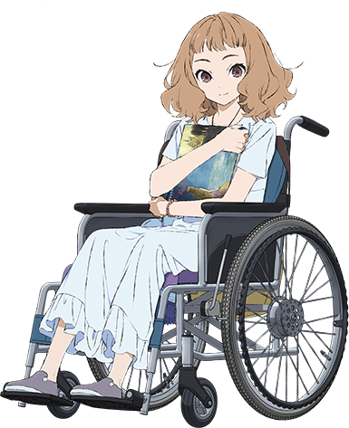
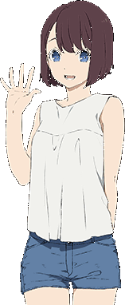
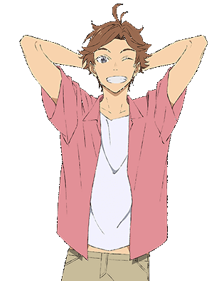
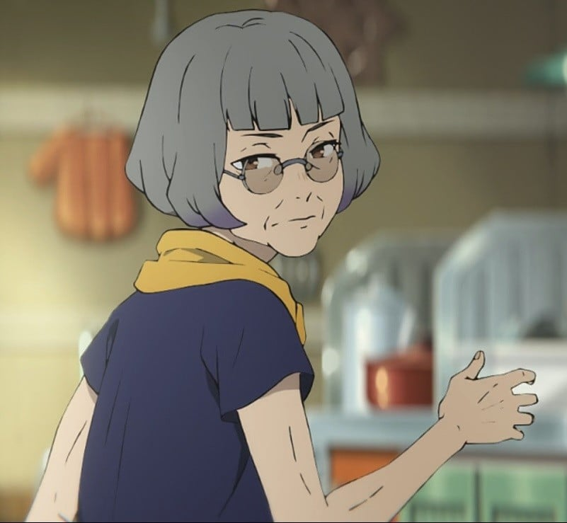

CHARACTER
鈴川恒夫
大阪の大学に通う4年生。メキシコに生息する魚に魅せられ、海洋生物学を専攻している。卒業後に留学するべく、ダイビングショップをはじめいくつものバイトを掛け持ち中。ジョゼと出会い、彼女の祖母からあるバイトを頼まれることになる。

ジョゼ
愛読書にちなんで、自らを「ジョゼ」と名乗る。祖母と２人暮らしで、車椅子で生活している。好きなことは本を読むことと絵を描くこと。ほとんどを家の中で過ごしているため外の世界への憧れが強く、魚のように好きな場所へ泳いでゆく空想に浸っている。可愛らしい見た目と裏腹に口が悪い。

二ノ宮舞
恒夫がバイトしているダイビングショップの後輩。魚の水中写真を撮ることが好き。恒夫に想いを寄せているが打ち明けられずにいる。

松浦隼人
恒夫と同い年のバイト先の友人。お調子者でノリがいい。舞の恒夫に対する気持ちに気づいている。

山村チヅ
ジョゼの祖母。何かと頑固で「外は恐ろしい猛獣ばかり」が口癖。他人を避け長い間二人だけで暮らしていた。
